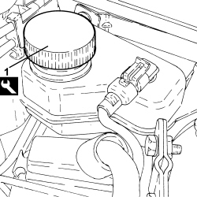
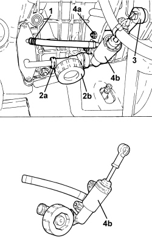
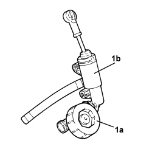

1820B21 MASTER CYLINDER (PUMP) - R R FOR RIGHT HAND DRIVE VERSIONS
- Path
- Procedures > 18 CLUTCH UNIT > 1820 CLUTCH RELEASE CONTROLS > 1820B HYDRAULIC CLUTCH SYSTEM > 1820B21 MASTER CYLINDER (PUMP) - R R FOR RIGHT HAND DRIVE VERSIONS
- Kind
- repair procedure (removal / refitting; the operation number is the code)
- Applies to
- all engines; all production periods
- Interactive page
- https://sloeber94.github.io/elrnDB/alfa/159/en/#/939005773
Applies to: all engines; all production periods
 Removing
Removing
 Refitting
RefittingOp. 0010T84 COOLANT FOR AIR CONDITIONING SYSTEM - DEHYDRATE AND REPRESSURIZE
Op. 7210E36 R.R. FRONT SIDE DOOR
Op. 5010C30 CENTRAL AIR VENT IN DASHBOARD - R.R.
Op. 5010C12 WINDSCREEN DEMISTER DIFFUSER - R+R
Op. 5010D56 SOLAR SENSOR - R.R FOLLOWING ELECTRICAL SYSTEM CHECK
Op. 7040A44 LEFT DASHBOARD SIDE TRIM - R.R.
Op. 5580C18 AIR BAG MODULE - R+R
Op. 4110A10 STEERING WHEEL - R+R FOR REPLACEMENT OR CHECKS
Op. 7040A26 STEERING COLUMN TRIM - R+R
Op. 5560B10 CONTROL PANEL - R+R
Op. 7040A45 RIGHT DASHBOARD SIDE TRIM - R.R.
Op. 7040A31 DASHBOARD COMPARTMENT ASSEMBLY - R.R.
Op. 5580C22 AIR BAG MODULE - PASSENGER SIDE - R.R
Op. 7040A58 INSTRUMENT PANEL MOULDING - R+R
Op. 5580C26 PASSENGER AIR BAG DISABLING KEY LOCK BARREL/SWITCH - R.R.
Op. 5010C55 LOWER AIR DIFFUSER (ONE) LH OR RH - R.R
Op. 7040A65 CONSOLE SIDE CLOSING (ONE) - R.R.
Op. 5010C32 AIR VENT ON TUNNEL COVER FOR REAR SEATS - R.R.
Op. 7040L20 TUNNEL COVER - R.R
Op. 5580C23 DRIVE SIDE KNEE PROTECTION AIR BAG MODULE R. R.
Op. 7040A56 SWITCH UNIT IN DASHBOARD - R.R.
Op. 5040D18 AIR CONDITIONING CONTROL UNIT - R.R.
Op. 7040A10 DASHBOARD TRIM - R+R
Op. 7040L06 PASSENGER COMPARTMENT FLOOR RIGHT FRONT CARPET - R. R.
Op. 5010B70 SIDE CONNECTOR BRACKETS ONE, LH OR RH, BETWEEN AIR CONDITIONER CASING AND DUCT FOR R
(left and right).
Op. 5010B46 CENTRAL AIR DUCT TO REAR SEATS - R.R.
Op. 5050B34 WINDSCREEN WIPER ARM/S COMPLETE WITH BLADE - R+R
Op. 7025A64 ENGINE COMPARTMENT GASKET - R.R.
Op. 7210E22 R.R. WINDSCREEN BASE TRIM
Op. 5050B38 WINDSCREEN WIPER ASSEMBLY - R+R OR REPAIR
Op. 7040A89 REINFORCEMENT BRACKET BETWEEN DASHBOARD SUPPORTING CROSSMEMER AND BODYSHELL - R.R.
1. Replace the brake-clutch fluid reservoir plug using the tool.
Tool | Description | Function | Validity |
|---|---|---|---|
2000001400 | Plug | Brake-clutch fluid reservoir cap |

Applies to: all engines; all production periods
1. Loosen the band and disconnect the flexible fluid supply pipe to the master cylinder.
2. Lift up the retaining clip (2a) securing the vibration damper connector (2b) to the rigid pipe on the flange.
3. Disconnect the master cylinder push rod from the clutch pedal.
4. Undo the bolts (4a) fixing the master cyliner (4b) to the pedal assembly and remove it.

Applies to: all engines; all production periods
1. Lift up the retaining clip and separate the vibration damper (1a) from the master cylinder (1b).

Applies to: all engines; all production periods
Refitting
Removing- Connect the vibration damper to the master cylinder and secure it using the retaining clip.
- Place the master cylinder in position and secure it to the pedal mounting using the bolts.
- Connect the master cylinder push rod to the clutch pedal.
- Connect the flexible fluid supply pipe to the master cylinder and secure it using the band.
- Connect the vibration damper to the rigid pipe on the flange and secure the connector using the retaining clip.
Op. 7040A89 REINFORCEMENT BRACKET BETWEEN DASHBOARD SUPPORTING CROSSMEMER AND BODYSHELL - R.R.
Op. 5050B38 WINDSCREEN WIPER ASSEMBLY - R+R OR REPAIR
Op. 7210E22 R.R. WINDSCREEN BASE TRIM
Op. 7025A64 ENGINE COMPARTMENT GASKET - R.R.
Op. 5050B34 WINDSCREEN WIPER ARM/S COMPLETE WITH BLADE - R+R
Op. 5010B46 CENTRAL AIR DUCT TO REAR SEATS - R.R.
Op. 5010B70 SIDE CONNECTOR BRACKETS ONE, LH OR RH, BETWEEN AIR CONDITIONER CASING AND DUCT FOR R
(left and right).
Op. 7040L06 PASSENGER COMPARTMENT FLOOR RIGHT FRONT CARPET - R. R.
Op. 7040A10 DASHBOARD TRIM - R+R
Op. 5040D18 AIR CONDITIONING CONTROL UNIT - R.R.
Op. 7040A56 SWITCH UNIT IN DASHBOARD - R.R.
Op. 5580C23 DRIVE SIDE KNEE PROTECTION AIR BAG MODULE R. R.
Op. 7040L20 TUNNEL COVER - R.R
Op. 5010C32 AIR VENT ON TUNNEL COVER FOR REAR SEATS - R.R.
Op. 7040A65 CONSOLE SIDE CLOSING (ONE) - R.R.
Op. 5010C55 LOWER AIR DIFFUSER (ONE) LH OR RH - R.R
Op. 5580C26 PASSENGER AIR BAG DISABLING KEY LOCK BARREL/SWITCH - R.R.
Op. 7040A58 INSTRUMENT PANEL MOULDING - R+R
Op. 5580C22 AIR BAG MODULE - PASSENGER SIDE - R.R
Op. 7040A31 DASHBOARD COMPARTMENT ASSEMBLY - R.R.
Op. 7040A45 RIGHT DASHBOARD SIDE TRIM - R.R.
Op. 5560B10 CONTROL PANEL - R+R
Op. 7040A26 STEERING COLUMN TRIM - R+R
Op. 4110A10 STEERING WHEEL - R+R FOR REPLACEMENT OR CHECKS
Op. 5580C18 AIR BAG MODULE - R+R
Op. 7040A44 LEFT DASHBOARD SIDE TRIM - R.R.
Op. 5010D56 SOLAR SENSOR - R.R FOLLOWING ELECTRICAL SYSTEM CHECK
Op. 5010C12 WINDSCREEN DEMISTER DIFFUSER - R+R
Op. 5010C30 CENTRAL AIR VENT IN DASHBOARD - R.R.
Op. 7210E36 R.R. FRONT SIDE DOOR
Op. 0010T84 COOLANT FOR AIR CONDITIONING SYSTEM - DEHYDRATE AND REPRESSURIZE
Op. 0010T64 BRAKE AND/OR CLUTCH FLUID CHECK LEVEL AND TOP UP AS NECESSARY
Topics linked from this page (34)
- 0010T64 BRAKE AND/OR CLUTCH FLUID CHECK LEVEL AND TOP UP AS NECESSARY
- 0010T65 HYDRAULIC BRAKE SYSTEM - BLEED AIR
- 0010T84 COOLANT FOR AIR CONDITIONING SYSTEM - DEHYDRATE AND REPRESSURIZE
- 4110A10 STEERING WHEEL - R+R FOR REPLACEMENT OR CHECKS
- 4110A29 MOUNT WITH STEERING SHAFTS - R R - INCLUDES STEERING WHEEL R R - FOR RIGHT-HAND SIDE VERSIONS
- 5010B46 CENTRAL AIR DUCT TO REAR SEATS - R.R.
- 5010B70 SIDE CONNECTOR BRACKETS ONE, LH OR RH, BETWEEN AIR CONDITIONER CASING AND DUCT FOR R
- 5010C12 WINDSCREEN DEMISTER DIFFUSER - R+R
- 5010C30 CENTRAL AIR VENT IN DASHBOARD - R.R.
- 5010C32 AIR VENT ON TUNNEL COVER FOR REAR SEATS - R.R.
- 5010C55 LOWER AIR DIFFUSER (ONE) LH OR RH - R.R
- 5010D56 SOLAR SENSOR - R.R FOLLOWING ELECTRICAL SYSTEM CHECK
- 5040D18 AIR CONDITIONING CONTROL UNIT - R.R.
- 5050B34 WINDSCREEN WIPER ARM/S COMPLETE WITH BLADE - R+R
- 5050B38 WINDSCREEN WIPER ASSEMBLY - R+R OR REPAIR
- 5560B10 CONTROL PANEL - R+R
- 5580C18 AIR BAG MODULE - R+R
- 5580C22 AIR BAG MODULE - PASSENGER SIDE - R.R
- 5580C23 DRIVE SIDE KNEE PROTECTION AIR BAG MODULE R. R.
- 5580C26 PASSENGER AIR BAG DISABLING KEY LOCK BARREL/SWITCH - R.R.
- 7025A64 ENGINE COMPARTMENT GASKET - R.R.
- 7040A10 DASHBOARD TRIM - R+R
- 7040A26 STEERING COLUMN TRIM - R+R
- 7040A31 DASHBOARD COMPARTMENT ASSEMBLY - R.R.
- 7040A44 LEFT DASHBOARD SIDE TRIM - R.R.
- 7040A45 RIGHT DASHBOARD SIDE TRIM - R.R.
- 7040A56 SWITCH UNIT IN DASHBOARD - R.R.
- 7040A58 INSTRUMENT PANEL MOULDING - R+R
- 7040A65 CONSOLE SIDE CLOSING (ONE) - R.R.
- 7040A89 REINFORCEMENT BRACKET BETWEEN DASHBOARD SUPPORTING CROSSMEMER AND BODYSHELL - R.R.
- 7040L06 PASSENGER COMPARTMENT FLOOR RIGHT FRONT CARPET - R. R.
- 7040L20 TUNNEL COVER - R.R
- 7210E22 R.R. WINDSCREEN BASE TRIM
- 7210E36 R.R. FRONT SIDE DOOR